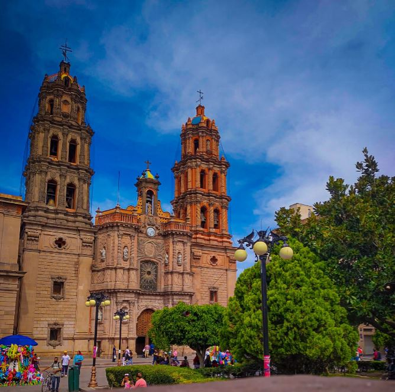

 El 3 de noviembre de 1592 se fundó San Luis Potosí, uno de los treinta y un estados que, junto con la Ciudad de México, conforman México. Su capital y ciudad más poblada es la homónima San Luis Potosí. San Luis Potosí posee una superficie aproximada de 65 268 km² y se divide en 58 municipios, entre los más importantes destacan: Matehuala, Tamasopo, Río Verde, Tamuín, Ciudad Valles, Tamazunchale, Cerro de San Pedro, Vanegas, Cerritos, San Vicente Tancuayalab, Charcas.
En la época prehispánica el territorio que ahora ocupa el estado de San Luis Potosí comprendía las áreas culturales de Mesoamérica y Aridoamérica. Su parte norte y centro-oeste fue habitada por las civilizaciones otomíes y chichimecas, los cuales eran grupos indígenas, principalmente cazadores y recolectores. En 1592, se descubrieron depósitos de oro y plata, con lo que dio inicio al desarrollo metalúrgico y asentamientos mineros en la actual capital del estado.
Se le dio el nombre de "San Luis Rey" en honor a Luis IX de Francia, y "Potosí" porque se comparó con las minas de plata en la actual Bolivia. En los siglos XVII y XVIII las órdenes religiosas se establecieron y empezaron a edificar iglesias y edificios, muchos de las cuales aún se encuentran en pie y se han convertido en universidades o museos.

A mediados de 1821, después de la Independencia de México, el general José Antonio Echavarri intimidó al Intendente y al Ayuntamiento a la rendición de la plaza de San Luis al Ejército de las Tres Garantías de Iturbide. Ellos se sometieron a su exigencia, pues no había manera de resistir, y así se proclamó la Independencia de San Luis Potosí.
Después, se dictó la primera Constitución Política del Estado de San Luis Potosí el 16 de octubre de 1826, y esta estuvo vigente hasta 1835 en que el Congreso Nacional decretó el sistema Centralista. Así desaparecieron las Legislaturas locales y los gobernadores fueron nombrados por el gobierno central. Esta situación subsistió hasta que se promulgó la Constitución de 1857.
La participación del estado potosino en la Invasión Americana en los años de 1846-1847 hizo que fuera llamado “San Luis de la Patria“por haber aportado gran cantidad de caudillos y elementos. En la Guerra de Reforma, la participación del estado potosino fue muy destacada, y durante la Intervención Francesa en 1863, la ciudad de San Luis Potosí fue declarada capital del país por el presidente Benito Juárez.